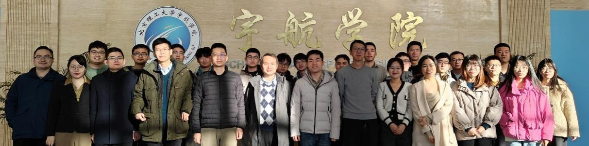

Research
Explore all themes- Electromechanical coupling
Electromechanical coupling and multiphysics response in functional materials.
- Mechanical metamaterials
Macroscopic metamaterials inspired by micro- and nanoscale phenomena.
- Functional microstructures
Scanning-probe methods to build, characterize, and tune functional microstructures.
- Lattice dynamics
Lattice vibrations, thermal transport, and unusual thermal properties.
- High-performance computing
Computational methods and software for advanced materials simulation.
- Machine learning for materials
Machine learning–assisted materials design and discovery.
About the Lab
The Advanced Materials Mechanics Laboratory at Beijing Institute of Technology is led by Jiawang Hong and includes Bonan Zhu, Xueyun Wang, Yingtao Zhao, Zewei Hou, and Gang Tang. The lab leads BIT’s Young Scientists Studio for Quantum Materials Mechanics. Its research examines how mechanical, electrical, magnetic, thermal, and optical fields interact in advanced functional materials and structures. The group has published more than 160 papers, including work in Science, Nature, the Journal of the Mechanics and Physics of Solids, and Physical Review Letters. It has undertaken more than ten national projects, and its members have received national and municipal teaching awards. Lab students have received national scholarships and honors for outstanding graduates and researchers.
People